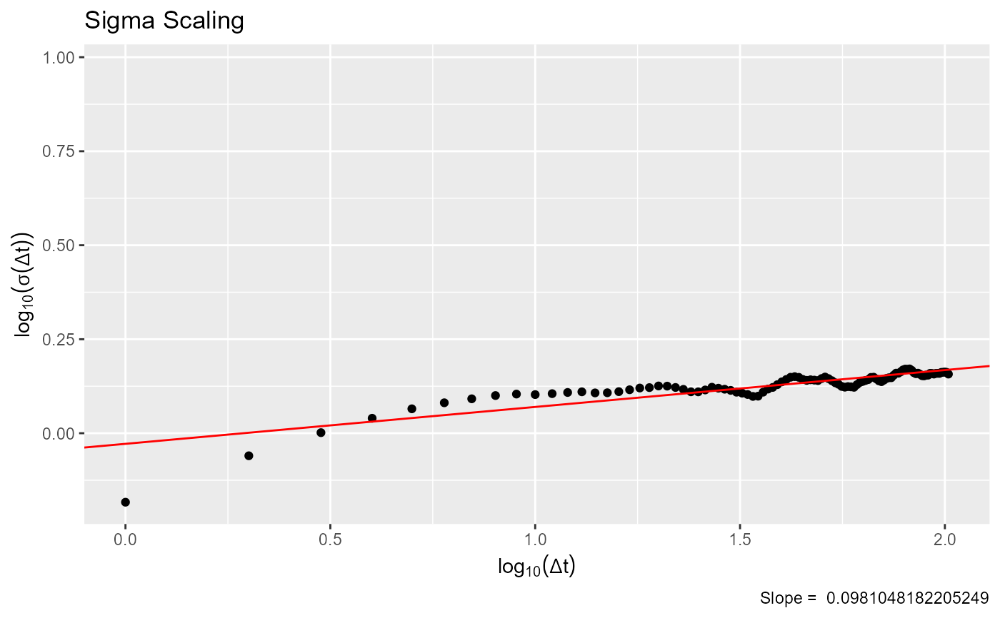

plot_sigma_scaling.RdPlots a scaling of the sd in the distribution of price changes across time lags and returns the value of the slope
plot_sigma_scaling(chain, plot = TRUE)
| chain | Vector of n length, where n is the number of trials or sampler iterations |
|---|---|
| plot | Boolean. Whether to return a plot or the elements used to make it. |
If plot is true, a sigma scaling plot. If false, a vector with the standard deviations at each lag
Markets show sigma scaling exponents around 0.5.
set.seed(1) chain1 <- sampler_mcmc("norm", c(0,1), 1, diag(1)) plot_sigma_scaling(chain1[[1]], plot = FALSE)#> [1] 0.7462984 0.9967371 1.1686469 1.3002975 1.3886138 1.4657430 1.5207912 #> [8] 1.5362467 1.5556786 1.5624490 1.5729226 1.5888925 1.6138107 1.6421450 #> [15] 1.6648751 1.6756023 1.6701865 1.6608909 1.6423838 1.6199695 1.6035684 #> [22] 1.5988625 1.5864555 1.5884850 1.5921402 1.5752027 1.5453772 1.5224437 #> [29] 1.5129250 1.5241096 1.5399425 1.5586670 1.5880518 1.6089522 1.6352175 #> [36] 1.6495986 1.6471017 1.6547899 1.6485007 1.6355298 1.6229134 1.6077815 #> [43] 1.6041117 1.6233252 1.6477648 1.6684871 1.6697560 1.6677194 1.6705073 #> [50] 1.6568019 1.6338977 1.6254614 1.6280203 1.6303466 1.6419994 1.6359258 #> [57] 1.6290840 1.6255261 1.6245577 1.6351575 1.6384434 1.6343391 1.6224909 #> [64] 1.6092573 1.6121913 1.6232225 1.6324477 1.6343102 1.6449688 1.6543489 #> [71] 1.6550382 1.6736156 1.6886427 1.6913357 1.7031233 1.6974455 1.6951426 #> [78] 1.6913987 1.6809351 1.6744163 1.6709509 1.6618981 1.6453573 1.6424729 #> [85] 1.6311415 1.6089316 1.5884544 1.5844043 1.5889529 1.5890100 1.5963473 #> [92] 1.6106310 1.6167173 1.6353517 1.6343343 1.6305610 1.6387745 1.6459140 #> [99] 1.6424140 1.6471589 1.6506242 1.6453793